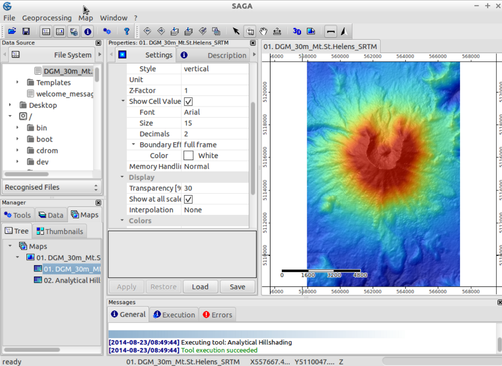
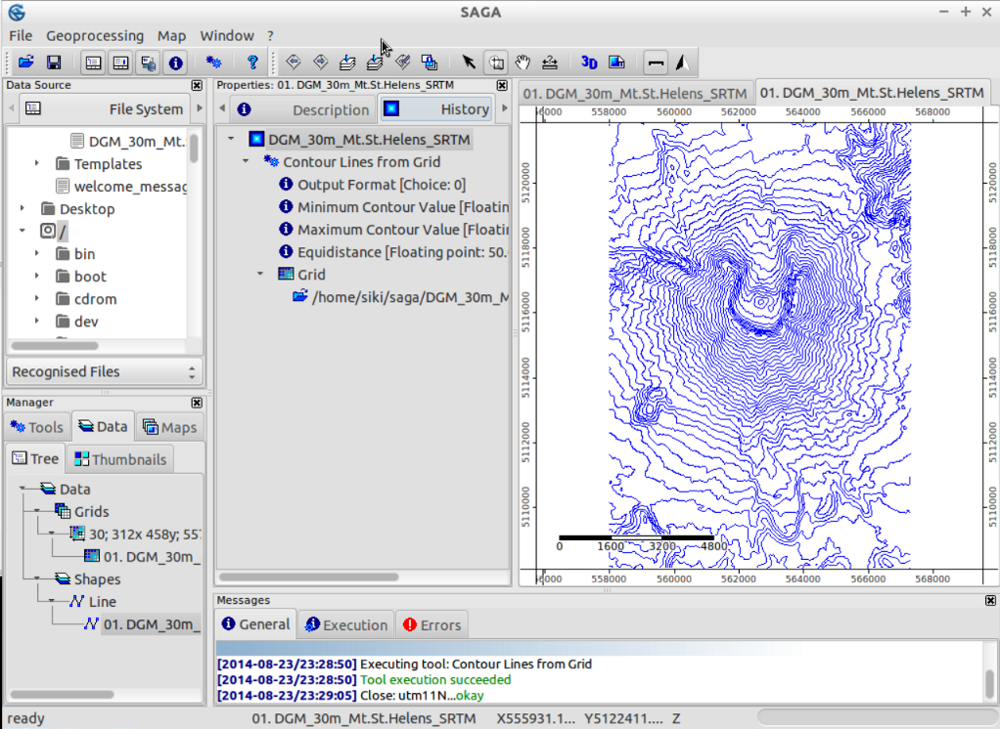

SAGA Quickstart¶
SAGA (System for Automated Geoscientific Analyses) is an open source geographic information system (GIS) used for editing and analysing spatial data. It includes a large number of modules for the analysis of vector (point, line and polygon), table, grid and image data. Among others the package includes modules for geostatistics, image classification, projections, simulation of dynamic processes (hydrology, landscape development) and terrain analysis. The functionality can be accessed through a GUI, the command line or by using the C++ API.
Running¶
To run SAGA GIS on the Live DVD, open the Desktop GIS group on the Desktop and click on the SAGA link.
When opening SAGA for the first time, you are presented with 3 subwindows: the Manager, the object Properties and the Messages window. The information in the object properties window will change depending on your selection in the Manager window.
You can close any of the windows (Manager, Object Properties, Data Sources and Messages). Try closing one of the windows to get more place for your map. You can show closed windows again in the Window menu.
{kind=link}
Opening data¶
Open the SAGA GUI and load the grid /home/user/data/saga/DGM_30m_Mt.St.Helens_SRTM.grd via the File|Grid|Load menu.
You will get a message in the General tab of the Messages window regarding the success or failure of this task. You should see something like Load Grid: DGM_30m_Mt.St.Helens_SRTM.grd...okay. Once you loaded the dataset, it will show up in the Data tab of the Workspace window. It will be listed under Grids and the grid system it belongs to.
In this case, the grid system information will look like 30;312x 458y; 557970x 5108130y. The first number is the cell size (30 meters), the next two numbers show the number of cells in x and y direction respectively, and the last two numbers are the origin of the grid.
注釈
SAGA's grid systems are referenced by the bottom left corner. This, and some more useful information on the dataset show up if you select the Description tab of the Properties window. Once you click on the tab, you will see not only more detailed information on the grid system, but also the Value Type of the grid (here FLOAT), the Value Range, some statistical measures and the Memory Size.
Tip
You can also load data by dragging and dropping it on the application. Try this with one of the datasets in the /home/user/data/gdal_natural_earth/ folder.
Displaying data¶
To display the dataset in a map view:
Double click on the dataset in the Data tab of the Workspace window. A new Map window will open up with the dataset displayed. The canvas is framed: top and left the x- and y-world coordinates are displayed. Bottom and right you see rulers in map units.
Try moving the mouse pointer over the map and watch the x-, y- and z-coordinates displayed in the bottom bar of the SAGA GUI window. The z-coordinates displayed correspond to the elevation values of the dataset (be aware that the values displayed are always those of the dataset selected in the Data or Maps tab).
Now use the navigation tools to zoom and pan. The Zoom tool is selected by default. A left click on the map zooms in, a right click zooms out. Holding the left mouse button down, dragging to the opposite corner and letting the mouse button up allows you to zoom to an area of interest.
注釈
If you zoom in a lot and turn on Show cell values on Settings tab, you will see that the cell values are getting displayed. To pan, select the Pan tool and click and drag to move the map. Have a look at the other buttons in the tool bar: these allow you to zoom e.g. to Full Extent.
Tip
Saga zooms very fast, if you are lost while browsing your data, click the 'Zoom to Full Extent' button in the toolbar
Creating a shaded relief map view¶
We will enhance the map display by calculating a shaded relief map.
Switch to the Tools tab of the Manager window and click on the triangle left to the Terrain Analysis - Lighting, Visibility module library: the list with the modules of this library will show up.
Now select the Analytical Hillshading module and then select the Settings tab of the Properties window. This will show up the module parameters (also have a look at the Description tab, which will display more information about the module and its parameters).
Click in the right column of the Grid system parameter (where [not set] is displayed) and select the grid system of the Mt. St. Helens dataset (30; 312x 458y; 557970x 5108130y).
Next click into the right column of the Elevation parameter and select the dataset. Click in the right column of the Shading Method option and select Standard. Now press the Apply and then the Execute button. A new dataset containing the hillshade will be calculated.
Have a look at the Data tab of the Workspace window - you will find the newly created dataset.
Double click on the 'Analytical Hillshading' dataset and select New in the dialog popping up. This will display the dataset in a new map view. After inspecting the dataset, close the Map window by selecting Close from the Window menu.
Now double click on the hillshade dataset again, but select the Map containing the elevation dataset in the dialog popping up (Add layer to selected map). This will place the hillshade on top of the elevation dataset.
{kind=link}
Switch to the Maps tab of the Manager window. You will see on the Tree tab the entry of your map and the datasets the map is composed of. The drawing order is top to bottom. Now do a right click on the 'Analytical Hillshading' dataset and select Move To Bottom from the context menu popping up. This will change the drawing order, placing the hillshade beneath the elevation dataset (which now shows up again in the map view).
Now select the elevation dataset (by left clicking) and have a look at the Settings tab of the Properties window. Find the Display section of the parameters and click in the right column of the Transparency option. Enter a value of 30 and press the Apply button. Now you will see your elevation values shaded by relief.
Feel free to try other Transparency settings or even try other Shading Methods in the Analytical Hillshading module (in case you do not change the output dataset parameter, the changes will be written to the grid already created, i.e. you will see the changes in the map view immediately).
{kind=link}
3D visualization¶
In a next step, you might like to visualize your map in 3D.
Be sure your Map window is selected and press the Show 3D-View button in the tool bar. In the dialog popping up, select the grid system containing your elevation dataset and set the Mt. St. Helens dataset as the Elevation parameter. Once you press the Okay button, the 3D view of your map will show up. Hold the left mouse button pressed and move the mouse to rotate and tilt the map.
Use the mouse wheel to zoom in/out and the right button to shift the map. Also have a look at the tool bar of the 3D View: the buttons replicate the mouse operations and offer further functionality. To close the 3D view select the Close option from the Window menu.

Creating contour lines¶
As a short introduction to SAGA vector capabilities, we will now generate Contour Lines from the digital elevation model.
This can be done by using the Shapes - Grid | Contour Lines From Grid if you open the tools tab in the manager, or you can equally well open the module using the menu: Geoprocessing|Shapes|Grid|Vectorization.
Choose your grid system and grid (this has to be the elevation). You can leave the options as they are, but perhaps it is better to choose an equidistance of 50m instead of the standard 10m.
A few seconds later your contour map has been generated and you should find it back under the data tab in the workspace. Try opening your contour map in a new map. All contour lines now have the same colour, which is not that attractive.
If you select your data set (in the workspace, data tab) and check the Settings in the Object Properties window, you can find a section: Display: color classification. You can change the classification from 'Unique symbol' to graduated color. Then you should still adjust the attribute which is used for this graduated color to the elevation. Press apply, and you are presented with coloured contour lines.
Check your history¶
If you select a dataset (eg your contour lines) in the data tab of the manager window, you can switch the object properties tab to 'history' to review which module and which options were used to create the dataset. This information is also kept when you save your files (in .mshp and .mgrd files).
{kind=link}
Tip
You can create a tool chain from your history - which allows you to run a chain of modules again with fixed options. A tutorial can be found at https://rohanfisher.wordpress.com/saga-tool-chains/
Saving data¶
To save the work you have created you should open the data tab in the workspace, and right click on the file you want to save. SAGA will save grid files to its own native format (*.sgrd) and shapefiles to the standard ESRI shapefile format (*.shp). It is also possible to save the project, by choosing File|Project|Save Project As. This will save all the map views and data settings, as well as offering to save the data files.
Importing/Exporting data¶
Under the hood SAGA can also use the GDAL library for opening different raster and vector formats. The easiest way is to use File|Grid|Open for raster data and File|Shapes|Open for vector data. For rasters among others geotiff is supported. Note that you can also just drag and drop files on SAGA. More advanced options and modules are present under Geoprocessing|File|Grid.
Tip
SAGA GIS grid format is supported by GDAL since version 1.7.0. Grid Files saved by SAGA can be opened by many other programs using GDAL. However, you must open the '*.sdat' file and not the '*.sgrd' file.
In this example we will use the digital elevation (SRTM) data from the region around Barcelona as you would download it from the web.
The data file we want to use is SRTM_u03_n041e002.tif and can be found under /home/user/data/raster . You can import this using the Import/Export GDAL/OGR module, which can also be found in the Geoprocessing|file|import raster.
After importing this dataset and opening it in a new window, you will most likely be disappointed: It looks all gray! Let's check what might be the cause: Some pixels near the coast seem to have a very small value (-32768) (you can check the value of a pixel by checking the Z: value in the status bar while moving your mouse over the grid).
These pixels actually have no data, so we should adjust the nodata settings: in the object properties window (after selecting the dataset in the workspace window), set the maximum no data value to -32768 and apply. After doing that, we can reset our color scale to fit the range of the data. An easy method is right clicking on the grid in the workspace and choosing 'Classification|Set Range to minimum maximum'.
You are now ready to repeat the first steps to create a hillshaded map or explore some of the other modules of SAGA!
What next?¶
More documentation can be found on the SAGA website: * http://www.saga-gis.org and specifically in the documentation archive: * http://www.saga-gis.org/en/about/references.html * https://sourceforge.net/p/saga-gis/wiki/Documentation/